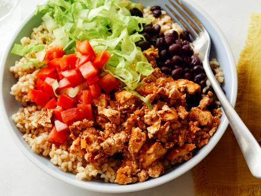

Vegetarian Burrito Recipe

Description
This homemade take on Chipotle’s sofritas is made from crumbled tofu simmered in a spicy poblano sauce. It’s not just for vegetarians—even the meat lovers in your life will find this dish hard to resist. We serve the mixture in bowl form with brown rice, black beans, pico de gallo and lettuce, but it’s also great as a taco or burrito filling.
Ingredients
- 1 small onion, one half cut into thick wedges through the stem and the other half finely diced
- 1 medium poblano chile
- 3 tablespoons olive oil
- 1 chipotle pepper and 2 tablespoons adobo sauce (from one 7-ounce can chipotle peppers in adobo sauce)
- 2 cloves garlic
- 2 teaspoons low-sodium soy sauce
- 2 teaspoons tomato paste
- 1 teaspoon chili powder
- 1 teaspoon red wine vinegar
- 1/2 teaspoon ground cumin
- Kosher salt and freshly ground black pepper
- One 14-ounce package extra-firm tofu, drained well
- Brown rice, for serving
- Black beans, for serving
- Shredded romaine lettuce, for serving
- Prepared pico de gallo, for serving
Steps
- Preheat the oven to broil.
- Place the onion wedges and poblano on a rimmed baking sheet and rub with 1 tablespoon of the olive oil. Broil, turning several times with tongs, until the poblano has collapsed in on itself and the vegetables are charred, 6 to 8 minutes. Remove from the oven. When the poblano is cool enough to handle, remove and discard the skin, stem and seeds.
- Transfer the poblano to a blender. Add the charred onion wedges, chipotle pepper and adobo sauce, garlic, soy sauce, tomato paste, chili powder, vinegar, cumin, 1/2 cup water, 3/4 teaspoon salt and a few grinds of pepper. Blend until smooth, then set the poblano mixture aside.
- Cut the tofu crosswise into 1/4-inch-thick planks, then press the pieces between a couple paper towels to remove as much moisture as possible. Heat 1 tablespoon of the olive oil in a large nonstick skillet over medium-high heat. Add the tofu and cook until well browned, about 5 minutes per side. Transfer to a plate to cool.
- Heat the remaining 1 tablespoon olive oil in the same skillet, then add the diced onions and cook, stirring occasionally, until tender, about 6 minutes. Using your hands, tear and crumble the tofu into very small pieces and add to the skillet. Cook, stirring to combine, until warmed through, about 2 minutes.
- Add the poblano mixture and 1/2 cup water to the skillet and cook until it’s bubbling all over and the tofu has absorbed some of the sauce, about 5 minutes. Add 1 to 2 more tablespoons water if the mixture gets too dry (it should be saucy). Taste and add more salt and pepper, if needed.
- Serve over rice and beans and top with lettuce and pico de gallo.